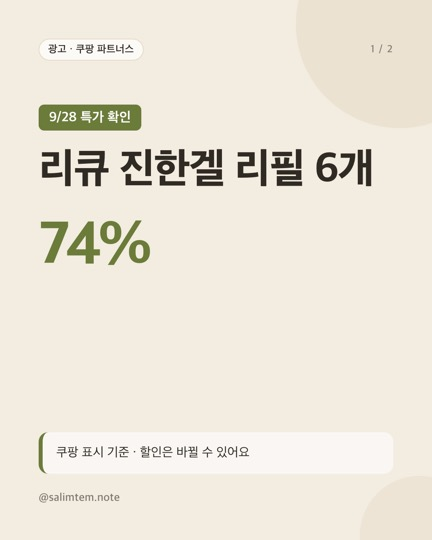
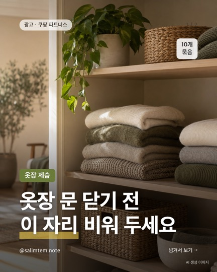
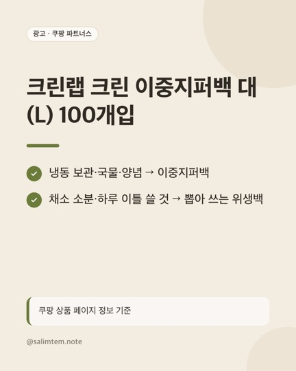
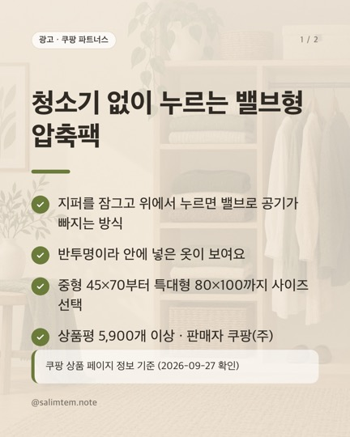

이 페이지는 쿠팡 파트너스 활동의 일환으로, 이에 따른 일정액의 수수료를 제공받습니다.
살림템 정리노트
@salimtem.note · 살림·자취 생활템 (주방·수납·청소, 1~5만 원대)
번호는 Instagram 글에 적힌 번호와 같아요. 가격·재고는 쿠팡에서 다시 확인해 주세요.
🔥 요즘 특가 확인 시각 기준 · 할인은 바뀔 수 있어요

리큐 진한겔 리필 6개
- 오늘(9/28) 쿠팡 골드박스에 리큐 진한겔 리필 2.1L×6개 74% 할인 떠 있어요.
- · 76,800원 → 약 19,360원 (와우할인 표시, 와우회원 기준)
- · 파우치 리필 6개 총 12.6L, 일반·드럼 공용 액체형
- · 3개 옵션(16,900원)과 6개 가격 차이는 2,460원
리큐 진한겔 프레쉬 런드리향 일반드럼겸용 액상세제 리필 2.1L × 6개
쿠팡에서 가격·후기 보기 (광고)원문 글 보기전체 추천

옷장 문 닫기 전 이 자리 비워 두세요
- 옷봉 있는 옷장·행거 → 걸이형
- 봉 없는 서랍장 → 서랍형
- 두꺼운 옷 사이사이에 나눠 걸기
- 교체 날짜를 적어 두기
탐사 옷걸이형 제습제, 200g, 10개
쿠팡에서 가격·후기 보기 (광고)원문 글 보기
크린랩 크린 이중지퍼백 대(L) 100개입
- 냉동실 정리하다 보면 지퍼백이 제일 빨리 떨어지죠.
- 사실 전부 지퍼백일 필요는 없어요. 역할을 나누면 덜 써요.
- · 냉동 보관·국물·양념 → 이중지퍼백
- (크린랩 이중지퍼백 L 100매, 냉동/냉장 겸용, 1매당 110원대)
크린랩 크린 이중지퍼백 대(L) 100개입
쿠팡에서 가격·후기 보기 (광고)원문 글 보기
청소기 없이 누르는 밸브형 압축팩
- 지퍼를 잠그고 위에서 누르면 밸브로 공기가 빠지는 방식
- 반투명이라 안에 넣은 옷이 보여요
- 중형 45×70부터 특대형 80×100까지 사이즈 선택
- 상품평 5,900개 이상 · 판매자 쿠팡(주)
리브맘 청소기없이 5초 맨손 의류용 압축팩 (5개입, 중형)
쿠팡에서 가격·후기 보기 (광고)원문 글 보기